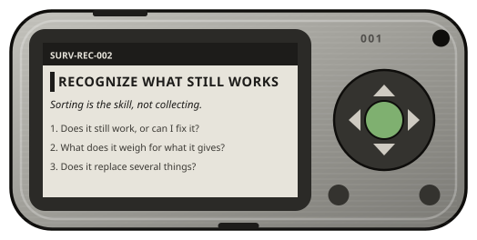

Phenix Project · free · open · offline
Knowledge is the last thing we should lose.
A free, participative, open library of knowledge. It works offline, and it's built to run on ultra-resilient devices.
On a phone? Here is how to install it, no store and no account.
Why
In 2024, the internet was cut 296 times, in 54 countries. Millions of people were left alone with what they already knew. Often, it wasn't enough.
The day access to knowledge is restricted, or erased by a global outage, you won't just be disconnected. You'll be blind.
Medicine, local maps, technical know-how, history. Think of every question you ever asked the internet. How would you have done without it?
Participate now, simply. Write down what you know, for everyone.
Source: Access Now, #KeepItOn report on internet shutdowns, 2024.
What makes Phenix different
Open
Anyone can write a sheet, on any subject. Nobody to ask for permission to get started.
Participative
Propose, correct, vote, discuss. Experts settle the hard topics, everyone takes care of the rest.
Practical
Knowing how an engine works is nice. Knowing how to fix it is better. Every sheet starts with what to do.
The devices

Phenix 001 is a pocket reader the size of a Flipper Zero, with an e-ink screen you can read in full sun. Phenix 002 adds a color screen, a keyboard and a long-range radio. Both are built only from common parts, open with a screwdriver, and are meant to cost little enough for every town hall.
The library
Every sheet is a standalone text file. The software indexes them, links them and filters them, it never locks them in. If Phenix disappears, the sheets stay readable.
Memory
What happened, and what it teaches us.
Technique
How things work, and the technical data that goes with them.
Survival
What to do, right now, when things go wrong.
Phenix is not just a survival database. A sheet can be about an engine, a plant, a craft, a period of history, a cooking or building method. What matters is quality and structure, not the subject.
Two structures, one reason
Act → Adapt → Understand
The reader has no time. They act first, and understand once things settle down.
Act → Understand → Adapt
The right move comes from the mechanism. Learned the other way round, it breaks outside the case described.
The ecosystem
The app. One 2.9 MB file with every sheet inside, readable offline in any browser, even on an old phone or laptop.
AvailableThe community space. Write a sheet in minutes, vote, discuss, translate, correct.
ComingOur own devices. A pocket e-ink reader, and a rugged terminal with a keyboard and long-range radio.
In design